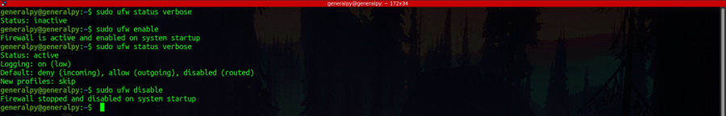

Troubleshooting ssh
First step to configure ssh is to check if server is accessible or not, i.e ping the server(or use other methods if ping is blocked).
If server is up and running, check if port 22 is accessible and is running ssh(using telnet or ssh). Sometimes ssh is also running on different ports so we can run a nmap scan to get results.
nmap and telnet scans confirm that port 22 is open and is of ssh.
If you get error like above, then some server properties like ip address, mac address etc have changed since the last time you logged in hence the RSA key has changed. So we first remove the key from the known_hosts file which resides in a hidden directory in user's home directory.(full path = /home/user/.ssh/known_hosts). We can then again connect to the server, this time the prompt for saving RSA fingerprint will appear.
Sometimes firewall blocks service like ssh.
The linux firewall is called netfilters iptables. To check firewall policies, we can use command :
sudo iptables -vnLCheck that policy is set to Accept and there are no rules to drop packets.
There is also another firewall in ubuntu which is know as ufw(uncomplicated firewall) which is disabled by default and can be used to set firewall rules easily.

We can see all available application profiles for firewall by using :
sudo ufw app listWe can then allow a application(like ssh in our case) by using :
sudo ufw allow ssh

If there is still a problem, we can run ssh in verbose mode using -v flag. Multiple v increase verbosity.
We can also check server logs for the problems. On ubuntu logs are stored in /var/log/auth.log and on centos /var/log/secure